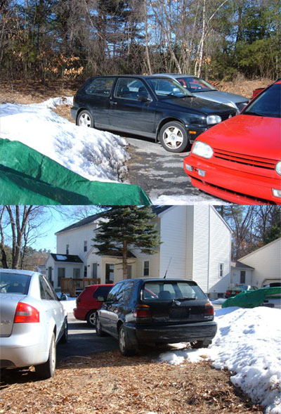
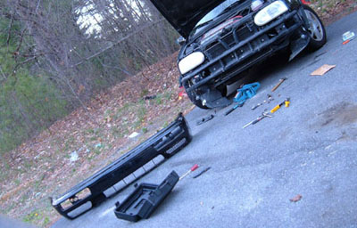
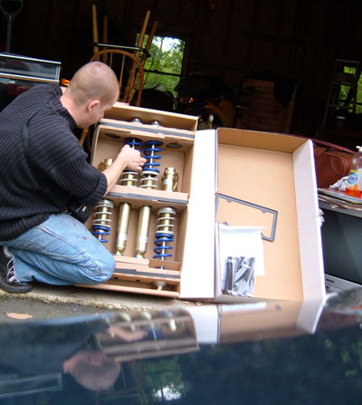
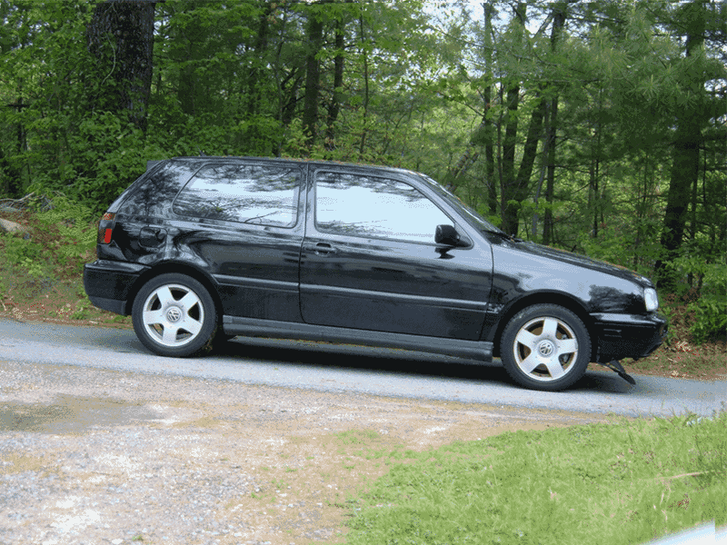
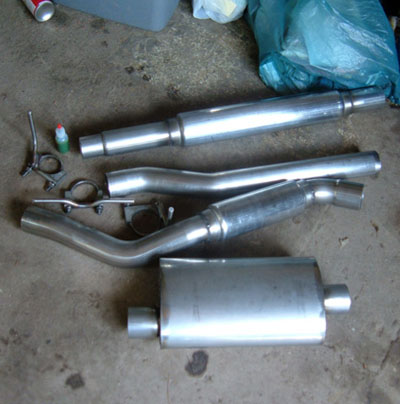
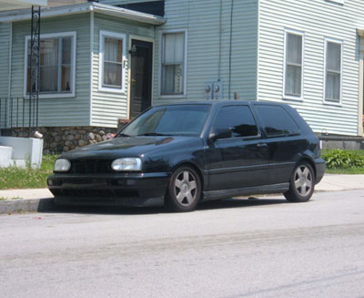
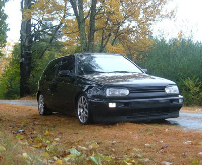
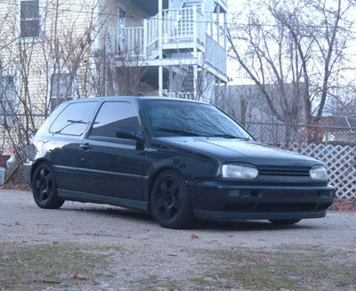

GREP VR6 is a private tuning project the goal of which was to show how ugly OEM looking VW Golf can become a different car as far as looks and performance is concerned.

This is how the car looked when it was just purchased.

But it didn't sit still for too long, I started modding it as soon as snow melted.

New suspension has arrived

The biggest upgrade was installing a new adjustable suspension. Ride height difference is illustrated in this animation.

Techtonics exhaust was a next modification.

And after having tinted the car, it appeared on the streets.

BBS 16

This is how it appeared in the winter wheels.